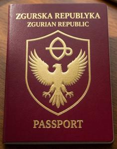
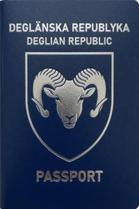

Pannonian passport scam
{kind=link}

{kind=link}

If you were lucky enough to be born a citizen of a developed country, you've probably never seen internet ads promoting Zgurian or Deglian citizenship. The target audience is refugees, illegal immigrants, and citizens of less lucky countries. These services advertise a fully legal purchase of a European country citizenship for the equivalent of $1,000–$2,000, paid in crypto, immediately, entirely online, with no formalities, and with a passport delivered anywhere in the world within two weeks. Some firms with physical offices even offer a biometry option.
This is all true. Technically, it isn't a scam — you get exactly what you pay for. These passports are legally issued by Zgurian Republic (ZR) or Deglian Republic (DR) authorities, the firms are authorized, and the purchase genuinely makes you a DR or ZR citizen. The problem is that this citizenship is absolutely useless for any reasonable purpose, or even worse.
ZR and DR are two rival de-facto states of Former Upper Pannonia (FUP), unrecognized by any other state except Transnistria and Tuvalu — and unrecognized by each other. Their passports are therefore considered valid travel documents almost nowhere. You cannot obtain a visa on a DR or ZR passport, and cannot enter even visa-free countries with it. A border officer may treat it as a harmless curiosity or as a forged document. The outcome is unpredictable.
Native Zgurians and Deglians travel abroad on special "FUP resident passports" issued by the UN High Commissioner administration. These are not for sale, difficult for natives to obtain, and unavailable to foreigners altogether.
The only territory a mail-order DR or ZR passport can get you into is Former Upper Pannonia itself. The available and unavailable entry options are described below.
Entry through the Neutral Zone
Under the Lausanne agreements, UN authorities — in this context, the border control officers at Vronovica International Airport — should allow DR or ZR citizens either to leave FUP or to return to FUP. Border control is instructed to interpret this literally and exclusively. A DR or ZR passport entitles you to return to FUP, not to enter it for the first time. If your passport carries no departure stamp from Vronovica International Airport, you will not be let in. No exceptions have been ever recorded.
Entry into Zgurian Republic by land
ZR has land border crossings with Austria, Hungary, Slovenia, and Croatia, which fall outside UN administration control. The limitations described above do not apply. You can enter ZR by land on a Zgurian passport — though not, of course, a Deglian one.
There is a caveat. To enter ZR by land, you must first reach one of the neighboring countries — all of which are in the Schengen zone. If you have already managed to get into Schengen, you generally have better options than settling in ZR, where jobs are scarce and legal business opportunities scarcer.
Otherwise, this option works. If you are determined to visit ZR for whatever reason, purchasing a Zgurian passport may be the fastest route, though not the cheapest.
Entry into Deglian Republic by land
Just don't do this.
DR has border crossings with Romania, Serbia, and Croatia. Of these, Serbia is not a Schengen state and relatively easy to enter. You can arrive in Belgrade or Novi Sad on your primary national passport, travel to the Deglian border, show your Deglian passport to the border officer, and you are in.
Simple enough. But don't do this.
Passport-selling firms never tell you that DR has been under permanent martial law since 1999, which means Deglian citizens cannot leave the country without a special permit. The conditions for obtaining one are not prohibitive but are opaque and unpredictable. Bribing a Deglian official is not the solution: they are generally distrustful of foreigners and reluctant to take money from people they don't know. Since 2003, bribery in DR has been a capital offence for both parties.
And there is something worse. Under the Lausanne agreements, ZR and DR may not maintain conscription armies. The post-1999 DR military regime found a workaround: the Civilian Defence Service, mandatory for all adult male citizens, which is functionally a military service without lethal weapons. This is not a formality. Any adult male who enters DR on a Deglian passport will be conscripted into the Civilian Defence Service and required to complete a six-month drill, which is harsh. Avoiding conscription is classified as desertion — a capital offence.
This explains why DR passports are typically two to three times cheaper than ZR ones. Anyway, neither is worth the price. If you want to visit FUP as a tourist, do so on your primary national passport, as described in a separate guide. If you are considering settling in FUP permanently, for whatever reason, think twice.
Categories: Visitor guides